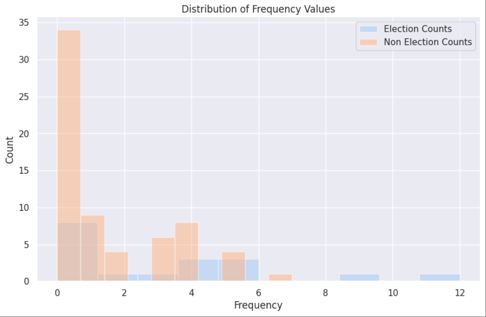
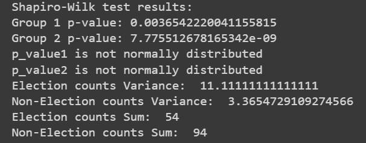

In order to determine what t-test we should use, our group first determined whether our independent variable was qualitative
or qualitative. For our case, since we are trying to determine what the effect a date being under an election
period or not has on the frequency of disinformation, we can say that the independent variable is qualitative.
For our dependent variable, since we are trying to determine the frequency, the dependent variable is quantitative.
Next, we needed to determine what our distribution and the variance of the data is.
This was done by first grouping our Tweets by whether or not the tweet falls under the election period.
The dataframe was edited to add an election_period column, which states whether or not the
uploaded tweet falls under the 2016, 2019 or 2022 election periods. This was done with the following code.
# Added whether or not the date falls under an election period here
# Took the liberty of adjusting the election period to start on the
# first day of January
election_periods = [
{'start_date': '2016-01', 'end_date': '2016-06'},
{'start_date': '2019-01', 'end_date': '2019-06'},
{'start_date': '2022-01', 'end_date': '2022-06'}
]
# Convert 'date' column to Timestamp
df_model['date'] = df_model['date'].dt.to_timestamp()
# Create the 'election_period' column
df_model['election_period'] = False
# Assign values to the 'election_period' column
for period in election_periods:
start_date = pd.to_datetime(period['start_date'])
end_date = pd.to_datetime(period['end_date'])
df_model.loc[(df_model['date'] >= start_date) & (df_model['date'] <= end_date), 'election_period'] = True
df_model
Note that the code was adjusted to start on the first day of January and end on the first day of June to make our code easier.
Following this, the dataframe was separated into two dataframes, election_counts, and non_election counts.
These allows us to have a group of tweet frequency for the counts
of the months that fall under the election/non-election period.
This is demonstrated in the following code.
election_counts = df_model[df_model['election_period'] == True]['count'].values
non_election_counts = df_model[df_model['election_period'] == False]['count'].values
Next, a histogram was constructed to get a visual idea of how the frequencies are distributed. This was done by implementing the following
code in matplotlib.
plt.hist(election_counts, bins=10, alpha=0.5, label='Election Counts')
plt.hist(non_election_counts, bins=10, alpha=0.5, label='Non Election Counts')
plt.legend()
plt.xlabel('Frequency')
plt.ylabel('Count')
plt.title('Distribution of Frequency Values')
plt.show()
This has the following graph as an output:

Upon visual inspection, we can see that the non-election counts are heavily
skewed towards the left, with the election counts also following the same
pattern albeit with a lesson height compared to the non-election counts.
This gives us an idea that the variance between the two may not be similar
as well as both graphs may not be normally distributed. This observation
is also proven in the following code.
#Shapiro-Wilk Test for Normality
from scipy.stats import shapiro
# Perform Shapiro-Wilk test
_, p_value1 = shapiro(election_counts)
_, p_value2 = shapiro(non_election_counts)
print("Shapiro-Wilk test results:")
print("Group 1 p-value:", p_value1)
print("Group 2 p-value:", p_value2)
if (p_value1 > 0.05):
print("p_value1 is normally distributed")
else:
print("p_value1 is not normally distributed")
if (p_value2 > 0.05):
print("p_value2 is normally distributed")
else:
print("p_value2 is not normally distributed")
# Sums
print("Election counts Sum: ", np.sum(election_counts))
print("Non-Election counts Sum: ", np.sum(non_election_counts))
The previous code checks for the normality and variances of the two graphs.
From our graph, we have the following result:

This shows us that the p-value is less than 0.05 for both groups, which means that
both of the graphs are not normally distributed. Their variances were also taken as
well, to which election counts has a variance of 11.111 and the non-election group
counts have a variance of 3.369. Intuitively we can say that the variances of the
two distributions are very far apart, but their significance can also be proven via the following
f-test.
from scipy.stats import f
var1 = np.var(election_counts)
var2 = np.var(non_election_counts)
# # Variances
# print("Election counts Variance: ", var1)
# print("Non-Election counts Variance: ", var2)
f_stat = var1/var2
df1 = len(election_counts) - 1
df2 = len(non_election_counts) - 1
p_val = 1 - f.cdf(f_stat, df1, df2)
if (p_val < 0.05):
print("Significant differences in variances.")
else:
print("Not significant difference between variances.")
The returned p_value of the code is less than 0.05 thus, there is a significant difference between the two variances.
Since the independent variable is qualitative, the dependent variable is qualitative, the
distribution of the two groups is non-normal and their variances are significantly different.
We chose Welch's t-test as our statistical test to prove or disprove our hypothesis.
Although some research state that Welch's t-test has an assumption that it is normally distributed,
the number of samples we have for both groups is high enough to account for this
(as shown in the sum of the two groups, n >= 30). The results of Welch's t-test will
be explained in the following section.